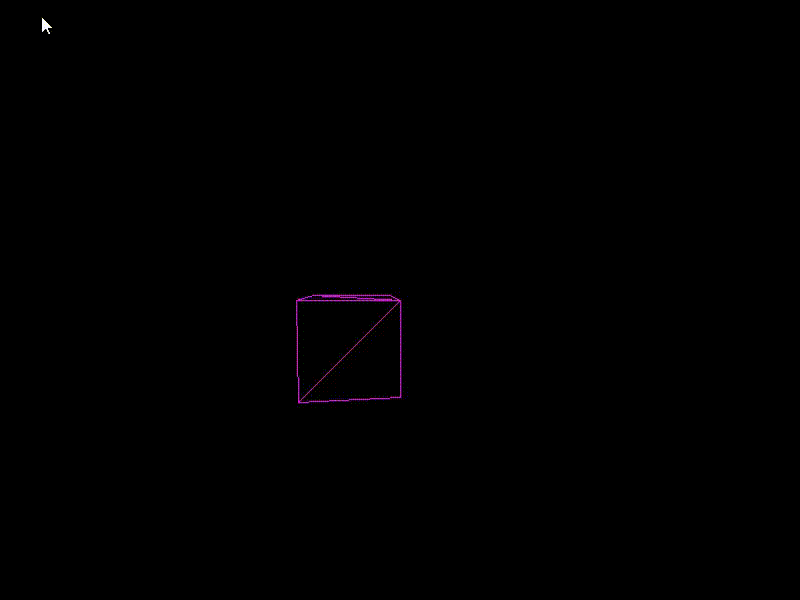
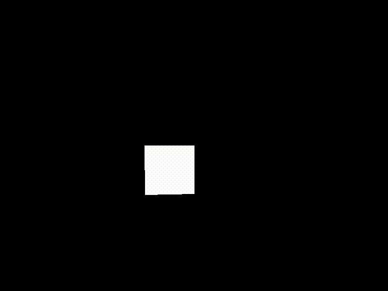

C++ Graphics Engine
Github repo: https://github.com/samueldegroot/GraphicsEngine
-

Wireframe of triangles
At this point, the engine's only capability is defining a mesh as a list of triangles. I draw the mesh by multiplying each triangle by a projection matrix to translate the 3D mesh onto the 2D screen. I calculate the normal of each triangle to determine if it should be drawn, preventing a transparent effect. The "camera" is stationary, so I rotate and translate the cube to make viewing easier.
-

Dynamic shading
Instead of the wireframe, I'm filling the space between the triangles now. By defining a point near the camera as a fake light source, I can calculate the dot product between the light and the triangles normal to determine how much light it should receive. In my engine, this just means setting a lighter or darker shade for the entire surface.
- >
-

Model Loader
Instead of defining a preset mesh of triangles in code, I now can import .obj files and draw them as a set of triangles.
Obviously, the first model I loaded was Peter Griffin from Family Guy. The importer is primitive, and can only work with files that have been triangulated (each face has exactly 3 vertices). The triangles are also drawn in whatever order the model defines them, so triangles can be visible when they shouldn't be, since my engine has no concept of depth yet. -

Painter's Algorithm
To solve the issue of depth for now, I sort each triangle by distance to the camera after performing all the matrix math. After I draw them in descending order of distance, so the closest triangles are drawn last. I learned this method is called Painter's algorithm. The distance to the camera is uses the midpoint of the triangle so its just an approximation, but it seems to work well enough for now.